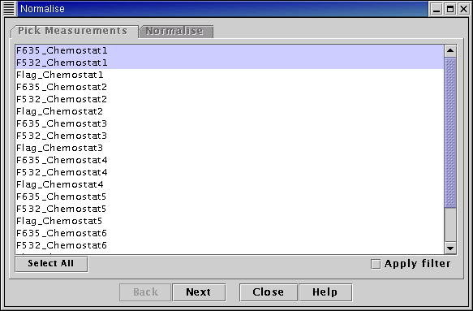
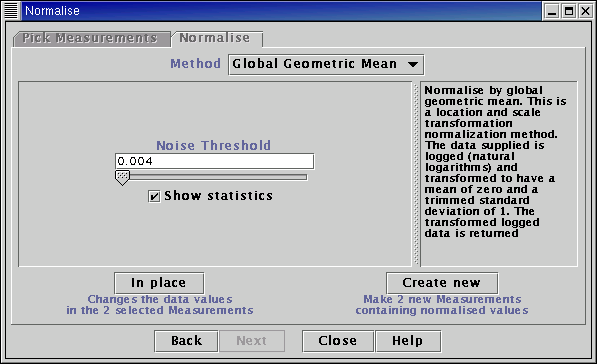

See the Plugin Commands help page for details on the commands offered by this plugin.
The Geometric mean normalization method corresponds to a location and scale transformation of the distribution of the logged data. The data passed to the algorithm is logged (logarithms to base e taken). The mean and standard deviation of the un-normalized logged data are then calculated. We then subtract the mean from the un-normalized logged data and divide by the standard deviation. The normalized logged data will have a mean of zero and a standard deviation of approximately 1. This can be useful when comparing biological data sets whose ranges of expression are expected to be of comparable size. Note that if the Geometric mean normalization method is applied to ratio data (i.e. ratios of intensities) the normalized values DO NOT represent normalized log-ratios. Exponentiating the normalized value will not give a fold-change. The normalized values represent values that can be used (with other data sets) to detect differential expression.
Notes
A trimmed standard deviation is actually calculated, i.e. i) first the standard deviation is calculated is using all the data points ii)the standard deviation is re-calculated from all data points that differ from the mean by +/- 3 times the un-trimmed standard deviation. This reduces the effect large outliers have upon the estimate of the standard deviation.
All logarithms used are natural logarithms, i.e. logarithms to base e. The normalized values returned are normalized logged data, transformed to a mean of zero and standard deviation of approximately 1.
If you wish to apply the Geometric mean method to ratios of intensities, you must calculate the ratios first (e.g. using the "Simple Maths" menu option on the "Transform" menu) before using the normalization algorithm.

Select Measurements to normalize from the list on the left-hand side of the panel.

Set the noise threshold. Un-normalized data values below the noise threshold will be set to the threshold.
If the "show statistics" option is checked, basic summary statistics about the raw, un-normalized data will be displayed.
Choose whether to create new Measurements in the main table, or overwrite the Measurements selected with the normalized data.